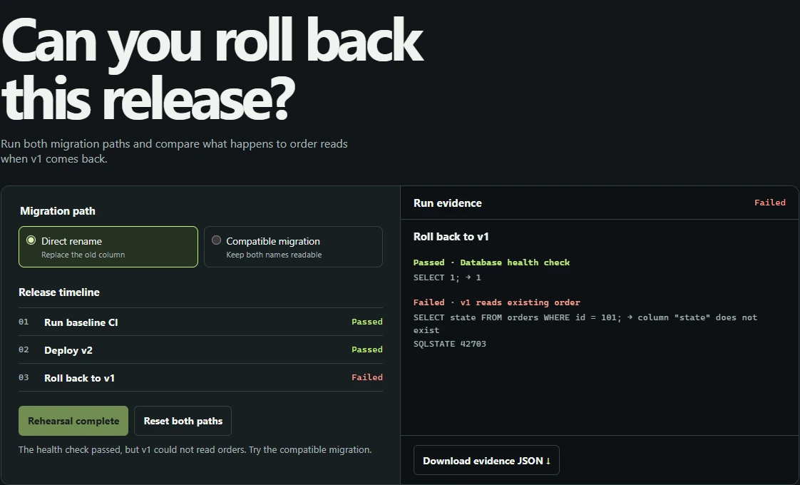

DevOps · Release reliability
Release Reliability Lab
I built a DevOps lab to show how a green health check can hide a broken rollback.

What went wrong
Version 2 renames an orders column. The rollout passes its checks. When version 1 comes back, its database connection works, but its old query fails because the column no longer exists.
How I tested it
The lab runs both migration paths against in-memory PostgreSQL and replays the results in the browser. The compatible path keeps the original write column and adds a readable alias. The CI checks verify that both versions can work with orders created during the rollout.
What you can try
Run each path, compare the rollback outcomes, and download the evidence. Then use the Codex or Claude Code skills to diagnose the first causal error and review whether a release is ready to roll back.